Gestão de Riscos Químicos em Laboratórios Acadêmicos
Bem vindos(as)!
Objetivo geral
Apresentar uma estratégia para gestão de riscos químicos em laboratórios acadêmicos.
Objetivos específicos
- Propor a adoção de uma cultura de segurança baseada no conhecimento de perigos e riscos, em vez de regras
- Conhecer os perigos dos agentes químicos e os principais meios de minimizar os riscos .
- Apresentar formas padronizadas de comunicação de riscos
- Demonstrar procedimentos de segurança no fluxo dos produtos em laboratórios, desde o recebimento até o descarte para coleta
Seção 1: Construindo uma cultura de segurança baseada em riscos
Cultura de Segurança
O que é uma Cultura de Segurança?
- A segurança tem a ver com as ameaças físicas e também com com crenças e atitudes compartilhadas.
- Cultura de segurança: É a coleção de crenças, valores, percepções e comportamentos sobre riscos à saúde e segurança mantidos por uma organização e seus membros.
Dois tipos de cultura de segurança
- Baseada em regras
- Aderência a regras
- Autoridade
- Fiscalização
- Baseada em riscos
- Foco no risco, não na regra
- Compreensão da razão por tras da regra
Cultura de Segurança Baseada em Regras
Valoriza a aderência às regras
As regras de segurança são estabelecidas por autoridades externas ou internas, como a Administração de Segurança e Saúde Ocupacional ou um membro da faculdade.
A instituição depende da fiscalização para garantir que seus membros obedeçam às regras de segurança.
Baixo envolvimento das pessoas
- Baixa participação dos usuários na definição das regras
- Pouco compromisso com as regras ou compreensão das razões por trás delas.
Cultura de Segurança Baseada em Regras
Valoriza a aderência às regras
Requer grandes investimentos de recursos
Uma cultura baseada em regras exige treinamento constante e requalificação do pessoal. A fiscalização das regras também requer grandes quantidades de tempo e atenção.
Cria percepções negativas sobre precauções de segurança
- As regras parecem arbitrárias e inconvenientes - uma barreira para um trabalho eficiente em vez de uma proteção contra incidentes. Estudantes e funcionários tendem a desenvolver uma atitude de culpabilidade e não se importam ativamente uns com os outros.
Cultura de Segurança Baseada em Regras
Valoriza a aderência às regras
Não é facilmente adaptável a novas situações
As regras são escritas para perigos conhecidos: uma operação de laboratório de rotina, uma operação comum em oficinas, e assim por diante. Quando uma nova situação se desenvolve, como um experimento inovador, as regras existentes muitas vezes não abrangem a situação, parecem excessivamente cautelosas ou especificam ações que são potencialmente perigosas.
Cultura de Segurança Baseada em Risco
Mantém o foco no risco, não nas regras
- Embora leis e regulamentos aplicáveis sejam seguidos, as pessoas concentram sua atenção em minimizar o risco em vez de memorizar regras.
As avaliações de risco são compartilhadas
- A tolerância ao risco é definida em conjunto por todos os membros da organização, não apenas por um gerente ou regulador. Todos contribuem.
Requer menos recursos
- Ensinar conceitos de risco que apoiam as regras de segurança requer menos tempo e dinheiro do que a fiscalização constante das regras e a requalificação.
Cultura de Segurança Baseada em Risco
Cria uma atitude positiva em relação à segurança
- Como as pessoas entendem as razões por trás dos esforços de minimização de riscos, estudantes e funcionários passam a se preocupar ativamente com a própria segurança e a segurança uns dos outros.
É adaptável a novas condições
- Quando os trabalhadores de laboratório podem reconhecer perigos, estimar riscos e identificar medidas para minimizar esses riscos, eles respondem a novos perigos e situações de maneira previsível, segura e mais competente.
Resumindo
Cultura baseada em risco
- Pesquisadores educados para minimizar o risco
- Cultura lida facilmente com situações novas
- Colaboração favorecida em vez de fiscalização
- Ênfase na redução do risco
- Menos políticas, mais gerais
Cultura baseado em regras
- Pesquisadores treinados em requisitos
- Muitas políticas de segurança
- Ênfase na conformidade com leis e regulamentos
- Muitas inspeções de laboratório
Riscos em Laboratórios Acadêmicos
Laboratórios acadêmicos são perigosos?
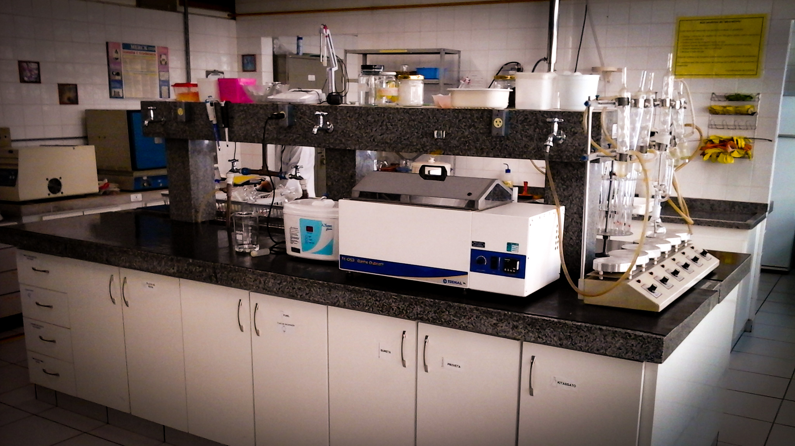Perigo x Risco
Perigo
Um perigo é o potencial de causar danos, como por exemplo, a capacidade de um incêndio de queimar você.
- Por exemplo, vamos considerar o aquecimento de uma cápsula de evaporação com um bico de Bunsen.
- 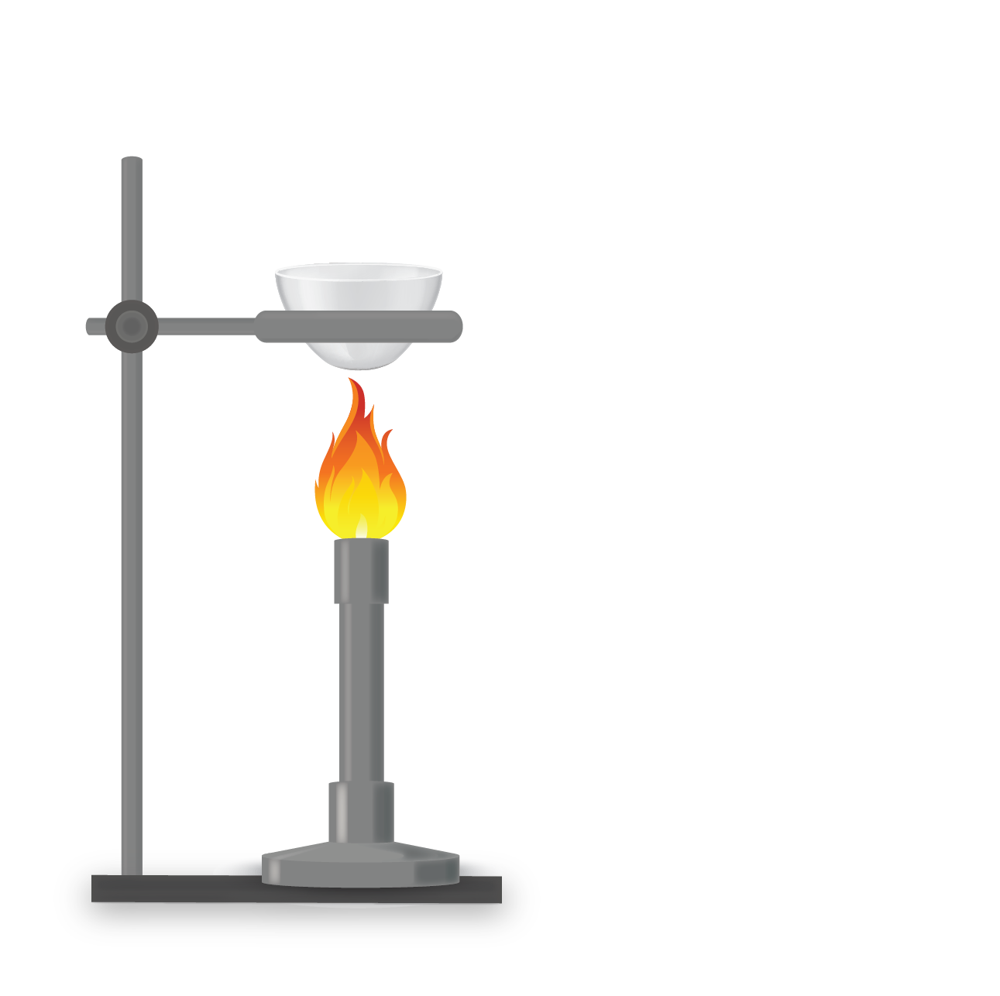
- O bico usa uma chama aberta, e o fogo pode queimar você ou inflamar materiais combustíveis ou inflamáveis. Isso é um perigo.
- Perigos são propriedades intrínsecas.
Risco
- Um risco combina a probabilidade de um evento ocorrer e a sua gravidade.
- Se um incêndio vai ou não queimar você é um risco.
- 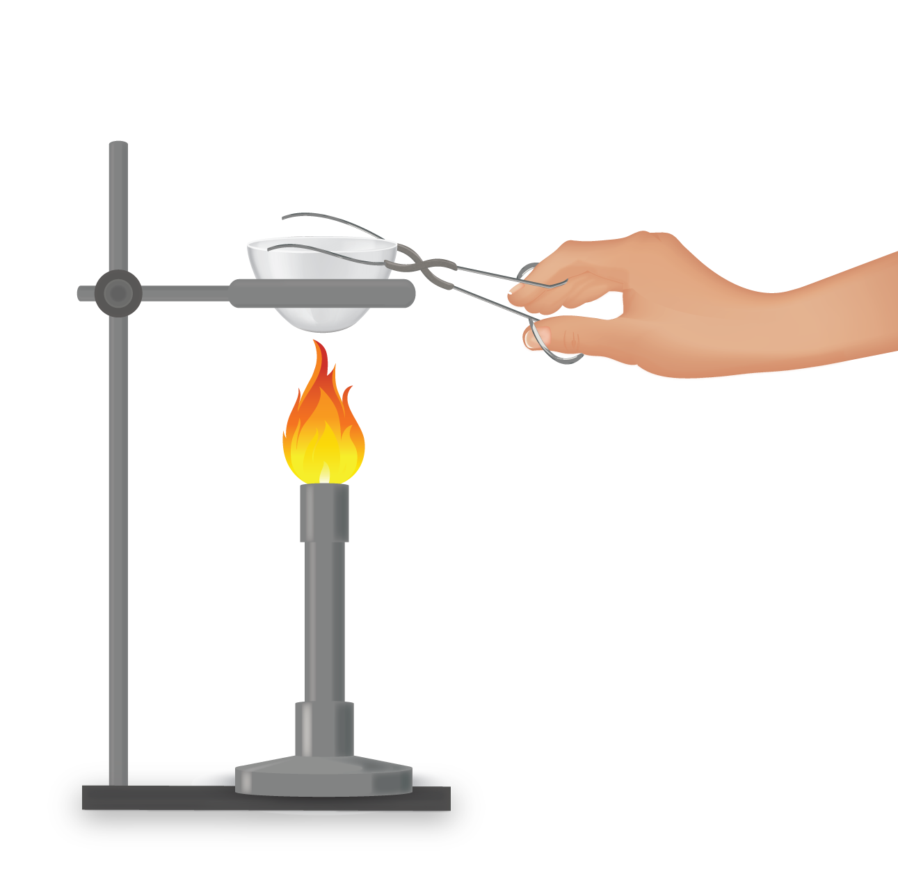
- Ao contrário dos perigos, os riscos podem ser minimizados ou eliminados.
Exemplo Prático
Usar roupas folgadas ao trabalhar com uma chama de bico de Bunsen aumenta o risco de as roupas pegarem fogo.
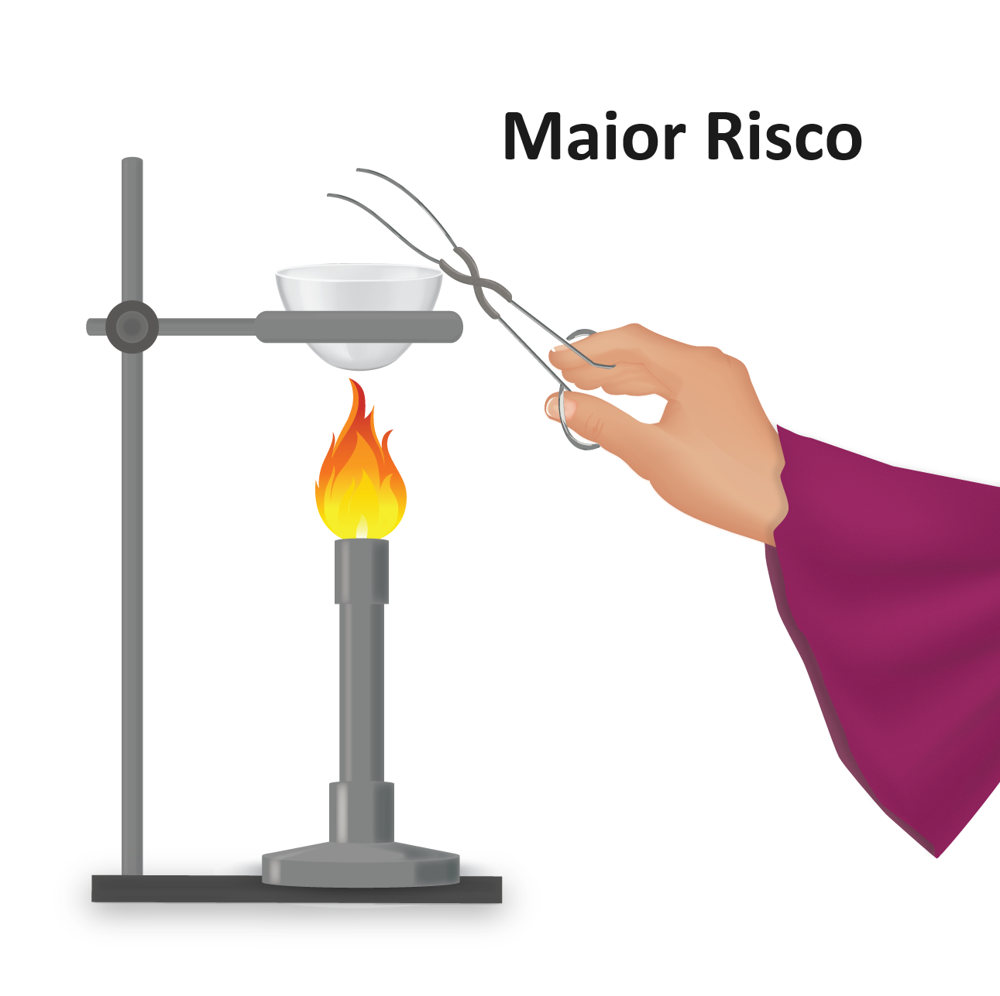
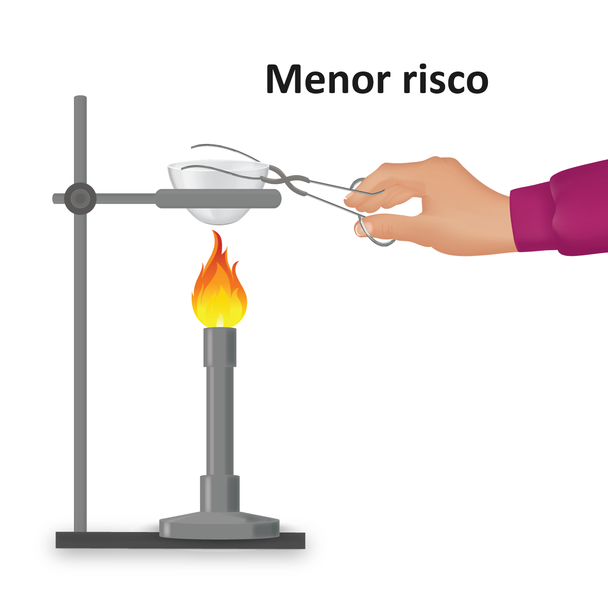
Exemplo Prático
Usar roupas que sejam não-sintéticas e ajustadas minimiza o risco de ferimentos ou de as roupas pegarem fogo.
O perigo ainda está presente, mas o risco foi reduzido.
Os agentes químicos são fontes de perigos consideráveis em laboratórios acadêmicos
Conhecer os perigos e controlar os riscos dos agentes químicos é fundamental nos laboratórios
Para trabalhar em segurança em um laboratório químico, é necessário:
- Reconhecer os perigos
- Avaliar os níveis de riscos dos perigos
- Minimizar os riscos dos perigos
- Preparar-se para as emergências dos riscos descontrolados
- 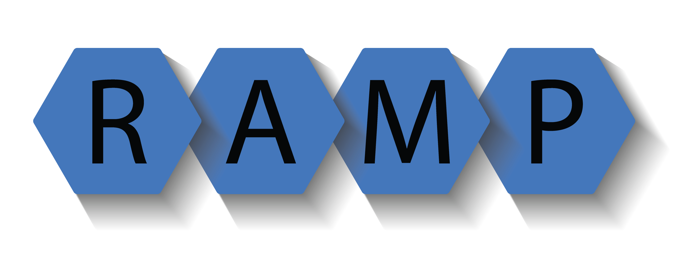
- 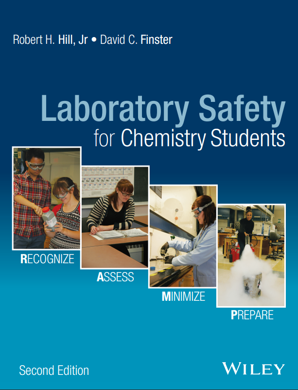
O sistema RAMP de segurança química
- Desenvolvido por Robert Hill e David Finster
- Membros dos conselhos de segurança em laboratório da ACS (Sociedade Americana de Química)
- É recomendado nas diretrizes da ACS para laboratórios de ensino de química dos EUA
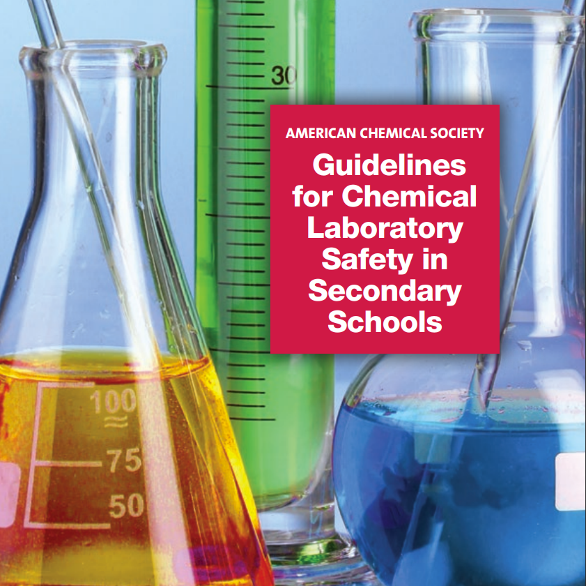
Diretrizes da ACS para os laboratórios de química no ensino médio
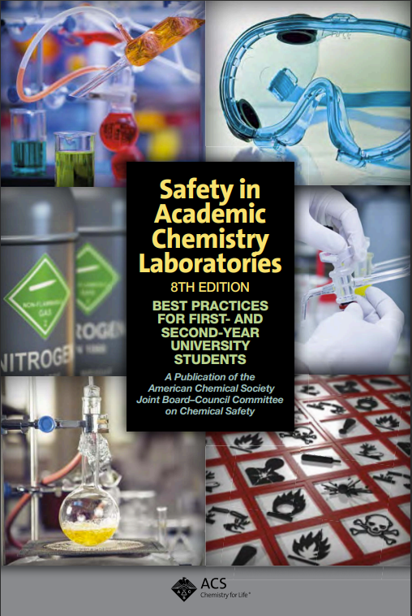
Diretrizes da ACS para os laboratórios acadêmicos de química
O sistema RAMP no Brasil
- A USP ministra a disciplina “Segurança em Laboratórios de Ensino e Pesquisa” que se baseia no sistema RAMP
- As aulas estão disponíveis online, gratuitamente:
- Slides
- 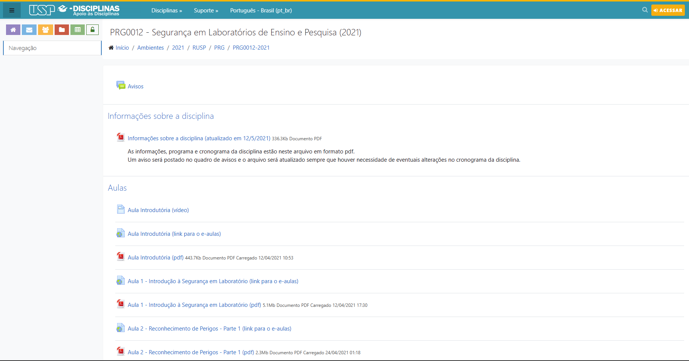
- Vídeo aulas
- 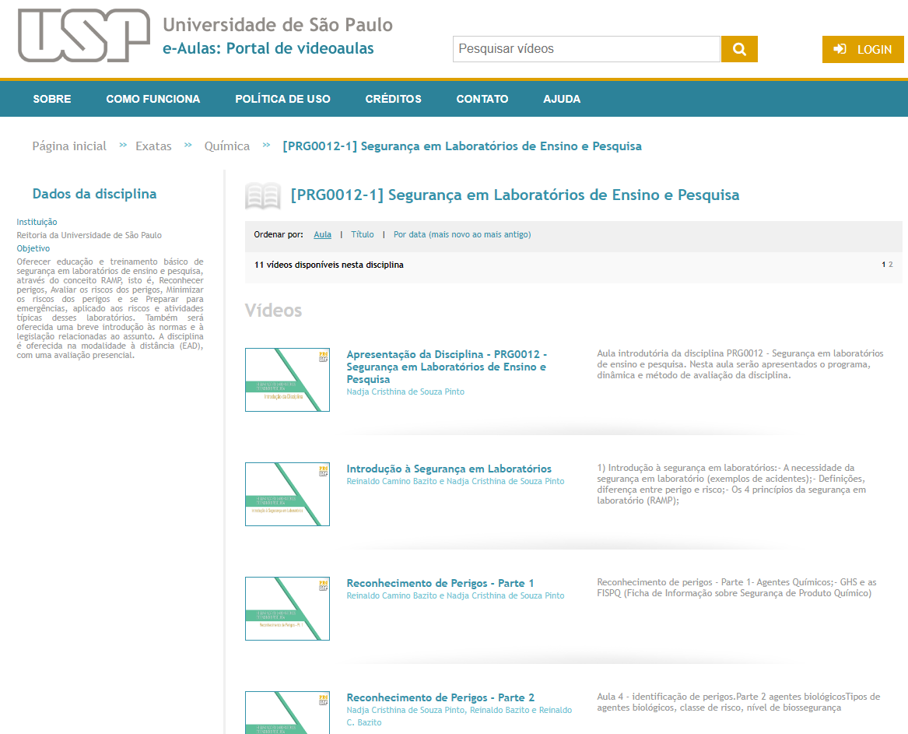
O uso do sistema RAMP contribui para uma cultura de segurança baseada em riscos e não em regras
Relembrando os conceitos
Cultura de Regras x Cultura de Riscos
Risco x Perigo
Sistema de segurança RAMP
Perguntas, sugestões, críticas?

DAD/PROPESSOAS/UFG - Out/2025